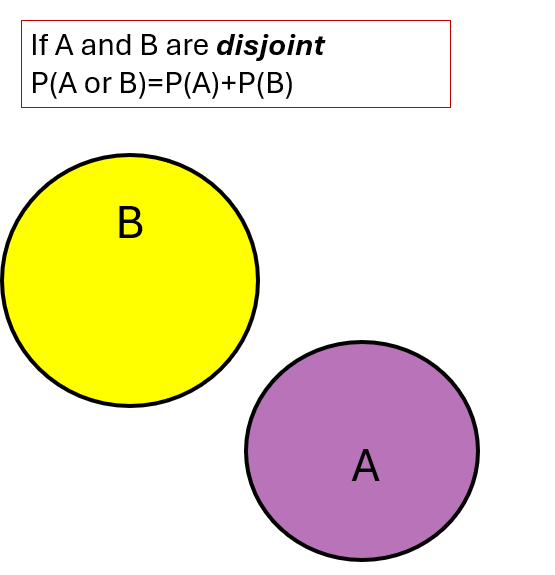
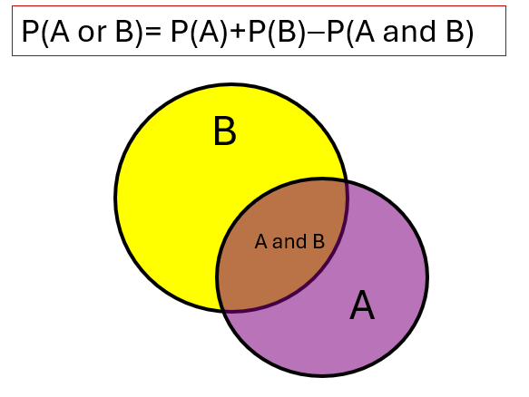
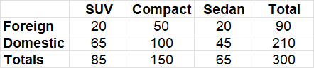
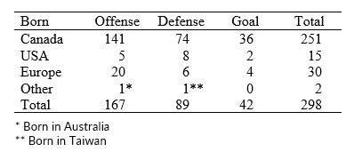
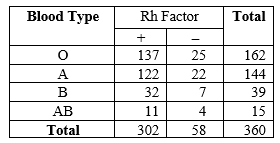

Determine the probability using the rules for “or”, “and”, and “given"
Use a tree diagram to determine the probability of multiple events
It is not always feasible to conduct an experiment thousands of times to determine the likelihood of events long term, so it would be better to be able to find the probabilities without conducting the experiment. In this section we will focus on probability rules based on the theoretical probabilities.
There is an assumption we must consider with theoretical probability, whether all outcomes in the sample space are equally likely to occur. This means that every outcome has the same chance of happening.
Checkpoint4.2.1.Equally Likely.
Which of the following experiments have equally likely outcomes?
Tossing a fair coin.
Rolling loaded dice.
Since the dice is loaded, it will land showing some numbers more often than others, thus not equally likely events.
Pull a ball out of a bag containing 5 red balls and 6 green balls.
Assuming the balls are the same size, then each ball has the same chance of being chosen. The outcomes of this experiment are the individual balls, so each outcome is equally likely. The probability of a specific color is not equally likely since the number of ways the color can occur is different .
First, let us look at the standard deck of playing cards. There are four suits: diamonds, clubs, hearts, and spades. Half the cards are red and half are back. The are 13 numbered cards for each suit consisting of two thru ten, an ace, and the face cards as jack, queen, and king. This makes the standard deck of 52 cards.
Figure4.2.2.Standard deck of cards
Checkpoint4.2.3.Hearts.
If one card is randomly drawn from a deck, what is the probability of drawing a heart?
Solution.
There are 13 hearts in a deck of 52 cards, thus P(heart)=13/52=1/4 .
Checkpoint4.2.4.Queen.
If one card is randomly drawn from a deck, what is the probability of drawing a Queen?
Solution.
P(Queen) = 4/52 = 1/13 = 0.077
Checkpoint4.2.5.Queen of Hearts.
If one card is randomly drawn from a deck, what is the probability of drawing the Queen of Hearts?
Solution.
P(Queen of Hearts) = 1/52, only one card in the deck meets this condition. This has a low probability of occurring.
Checkpoint4.2.6.not Queen of Hearts.
If one card is randomly drawn from a deck, what is the probability of not drawing the Queen of Hearts?
Solution.
P(Queen of Hearts) = 1/52, thus P(not Queen of Hearts) = 1-1/52 = 51/52 is the complement which is likely to happen.
Often with probability we want to investigate more than just one event taking place. Suppose we want to find the probability of drawing a 4 or a face card (which is the Jack, queen, and king). There are four events to consider. Since each of these represent a number card, they are mutually exclusive since they have no outcome in common. But when we want the queen of hearts, we want a queen and a heart card. These are not mutually exclusive since they share the same card.
Two events are mutually exclusive if they cannot occur at the same time. This means if you belong to one group, you are excluded from belonging to another group. If a card is a heart, it is excluded from being a spade, diamond, or club. If a card is a 10, it is excluded from being a 2 or a 5.
Recognizing if events are mutually exclusive can help us use some rules of probability rather than trying to count all the ways the events can occur together. We briefly used this idea in the last section when we look at the spinner. If you spin red, it is excluded from landing on blue, green, or yellow. Thus we were able to add the probabilities together.
When two events A and B are mutually exclusive, the probability that either A or B will occur is \(P(\text{A or B}) = P(A) + P(B) \)
When two events A and B are mutually exclusive, the probability that A and B will occur together is \(P(\text{A and B}) = 0 \) since they cannot occur at the same time.
For example, find the probability of drawing a 5 or 6 from one random draw from a deck of cards. Since 5 and 6 are number cards they are mutually exclusive then the P(5 or 6) = \(P(5) + P(6) = 4/52+4/52=8/52 = 0.1538\)
Also, the probability of drawing one card at random and having it be a 5 and a 6 cannot occur, thus \(P(\text{5 and 6})=0\)
Checkpoint4.2.7.Queen or King.
If one card is randomly drawn from a deck, what is the probability of drawing a Queen or King?
Solution.
P(Queen or King) = 4/52 +4/52 = 8/52 = .01538
Checkpoint4.2.8.Face Card.
If one card is randomly drawn from a deck, what is the probability of drawing a face card (Jack or Queen or King)?
Solution.
P(Jack or Queen or King) = 4/52 +4/52 +4/52 = 12/52 = 0.2308
So, what happens when the events are not mutually exclusive? If we simply add the probabilities together we are double counting some of the events. For example, what is the probability of getting a Spade or an Ace from one draw? There are 13 spades and 4 aces, but the Ace of Spades is counted in both groups, so we need to subtract out the duplicated card.
If we list all the outcomes that meet this condition we have {2S, 3S, 4S, 5S, 6S, 7S, 8S, 9S, 10S, JS, QS, KS, AS, AC, AD, AH} so there are 16 outcomes for this event.
When two events A and B are not mutually exclusive, the probability that either A or B will occur is \(P(\text{A or B}) = P(A) + P(B) - P(\text{A and B})\)
Checkpoint4.2.9.Five or Diamond.
If one card is randomly drawn from a deck, what is the probability of drawing a 5 or a diamond?
If one card is randomly drawn from a deck, what is the probability of drawing a 5 or 6 or diamond?
Solution.
P(5 or 6 or diamond) = 4/52 +4/52 + 13/52 – 2/52 = 23/52 = 0.4423 since the 5 of diamonds and 6 of diamonds are repeated the groups
When two events are mutually exclusive, this is also known as being disjoint. In the Venn Diagram below, when the two groups are disjoint, there are no common elements in the two groups thus the circles do not touch. Therefore, we can add both groups together to get the total number of elements. This same ideas works with probability.

Figure4.2.11.Disjoint Venn Diagram
When the events are not mutually exclusive, the circles overlap in a Venn Diagram, since there are common elements in both groups. This is why we subtract the duplicated values which are the “and” statements since they are in the overlapping section. Note: When the events are mutually exclusive, the “and” statement has a probability of 0, thus there is nothing to subtract, so you can use the same formula.

Figure4.2.12.Non Disjoint Venn Diagram
We can also find a variety of probabilities from a table. Each row is mutually exclusive to each other, and each column is mutually exclusive to each other. The table below summaries the size and type of cars at Iron Mountain Auto Sales. The cars can be either foreign or domestic. The cars can be a SUV, compact, or a sedan. When the row and column have a common value in the intersection, this refers to the “and” since it meets both conditions. There are 20 Foreign Cars that are SUVs, thus Foreign and SUV.

Figure4.2.13.Iron Mountain Auto Sales Table
Examples: If a car is randomly selected from Iron Mountain Auto Sales, find the probability of each event.
a. A foreign car is sold.
Solution: There are a total of 90 foreign cars with 300 total cars in the lot, so the probability of it being foreign is P(foreign) = 90/300 = 0.30 or 30%
b. The car is foreign and compact.
Solution: We want the intersection of foreign and compact which is 50 cars out of the total of 300. Thus P(foreign and compact) = 50/300 = 0.1667 or 16.7%
c. The car is foreign or compact.
Solution: we want all the foreign cars (90) or compact cars (150), so we need to add them together, but subtract the cars that were counted in both categories (which are the 50 cars that are both). Thus P(foreign or compact) = 90/300 + 150/300 – 50/300 = 190/300 = 0.633 or 63.3%
Alternatively we can take the total foreign cars of 90 plus any compact cars not yet added which are the 100 domestic compact cars for the same total of 190 cars out of 300 total.
Checkpoints: If a car is randomly selected from Iron Mountain Auto Sales, find the probability of each event.
Checkpoint4.2.14.Compact.
The car is compact.
Solution.
P(compact) = 150/300 = 0.5 or 50%
Checkpoint4.2.15.domestic or sedan.
The car is domestic or a sedan.
Solution.
P(domestic or a sedan) = 210/300+ 65/300 – 45/300 = 230/300 = 0.767 or 76.7%%
Checkpoint4.2.16.Domestic SUV.
The car is domestic and SUV.
Solution.
P(compact) = 65/300 = 0.217 or 21.7%
given
Practice Problems
Hockey Hall of Fame: From its founding through 2023, the Hockey Hall of Fame has inducted 298 players (including 10 women). The table below shows the number of players by place of birth and by position played. If a player is chosen at random from all player inductees in the Hockey Hall of Fame, let C represent the event of being born in Canada, D represent the event of being a defenseman, and G represent the event of being a goalie. Data from www.hhof.com

Figure4.2.17.Hockey Hall of Fame Table
Checkpoints: Write each of the following questions as a probability expression and find the probability using the Hockey Hall of Fame Table.
Checkpoint4.2.18.Defense.
What is the probability that an inductee chosen at random is a defenseman?
Solution.
P(defenseman) = 89/298 = .2987 or 29.9%
Checkpoint4.2.19.Canadian.
What is the probability that an inductee chosen at random is not Canadian?
What is the probability that the player chosen at random either plays defense or is a goalie
Solution.
P(defense or goalie) = 89/298 + 39/298 = 128/298 = .4295 since mutually exclusive events.
Checkpoint4.2.23.Canada plays Defense.
What is the probability that a Canadian inductee plays defense?
Solution.
P(defense | Canada) = 74/251 = .2948
Checkpoint4.2.24.Defense is Canadian.
What is the probability that an inductee who plays defense is Canadian?
Solution.
P(Canda | defense) = 74/89 = .8315
Blood Typing: Medical personnel determine blood typing by the type of antigens or markers that are on the surface of red blood cells (either A or B) and if there are antibodies to a portion of the blood type known as the Rh factor (either positive or negative). There are four blood types: A, B, AB, and O and two Rh factors: positive and negative. The table below presents the results of a representative sample of 360 adults in the U.S.

Figure4.2.25.Blood Type Table
Checkpoints: Write each of the following questions as a probability expression and find the probability using the Blood Typing Table.
Checkpoint4.2.26.negative.
What is the probability that a person in the sample chosen at random has a negative Rh factor?
Solution.
P(negative) 58/360 = .161 have negative blood
Checkpoint4.2.27.not AB.
What is the probability that a person in the sample chosen at random is not a universal plasma donor (universal plasma donors have Type AB blood)?
Solution.
use the complement thus P(not AB) = 1 – 15/360 = 345/360 = .958
Checkpoint4.2.28.B+.
What is the probability that a person in the sample chosen at random has type B and positive Rh factor?
Solution.
intersection P(B and pos) = 32/360 = .089
Checkpoint4.2.29.A or negative.
What is the probability that a person in the sample chosen at random has blood type A or a negative Rh factor (or both)?
Solution.
P(A or negative) = 144/360 + 58/360 – 22/360 = 180/360=.500 subtract the intersection since not mutually exclusive
Checkpoint4.2.30.A or B.
What is the probability that a person in the sample chosen at random has blood type A or blood type B?
Solution.
P( A or B) = 144/360 + 39/390 = 183/360 = .508 since mutually exclusive
Checkpoint4.2.31.Blood.
What is the probability that a person in the sample chosen at random has blood type O if we know the person has a negative Rh factor?
Solution.
P(O | neg) = 25/58 = .431
Checkpoint4.2.32.Blood.
What is the probability that a person in the sample chosen at random has a negative Rh factor if we know the person has blood type O?